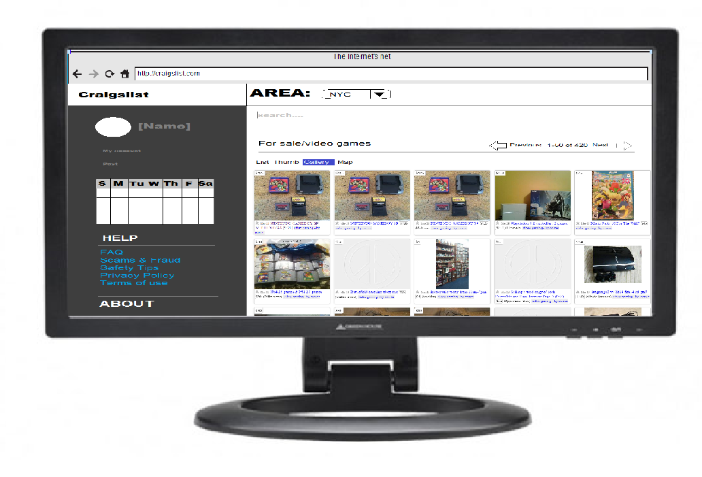

Main Page

This is the new main page of craigslist. Here the most noticeable difference is the large frame on the left. The large frame is always present on any page you go to. This is where your account avatar and information on various of things related to the site are. The post button is under your account avatar, a place that any user will often look at. The calendar is there to keep track any services that is on the website. And since this box is always present, the HELP and ABOUT tabs are always accessible. Then there is the dropdown menus for the different services and listings that makes craigslist what it is today.

This is the wireframe of the main page.
Seach Page

A majority of people who are looking for items for sale usually would like to see the actual object being sold. So on the search page, the items will be defaulted on gallery. The other options are still present for anyone who has a different style of researching.

This is the wireframe of the search page.
Area Page

The area page provides easy access to different places that provide services. The options to pinpoint the location is present under the map of the world.

This is the wireframe of the area page.
Example
